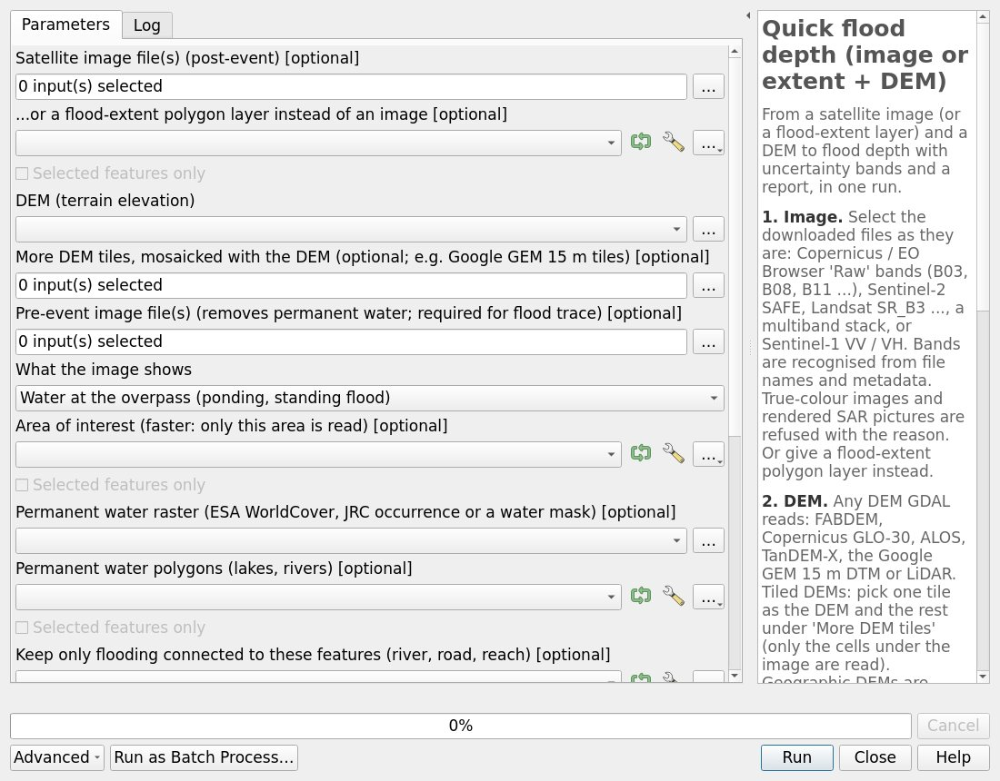

Part 1Getting started
1What FloodDepth does
FloodDepth turns a satellite image of a flood (or a flood-extent layer) and a DEM into a flood-depth map with uncertainty bands and a printable report. In one run it:
- recognises the bands of the files you downloaded (Copernicus / EO Browser "Raw" exports, Sentinel-2 SAFE, Landsat Collection 2, multiband stacks, Sentinel-1 VV / VH) from their names and metadata;
- maps water with NDWI plus confident MNDWI (or SAR backscatter) and an edge-based Otsu threshold, and refuses a threshold outside the physically usual range instead of using it;
- removes permanent water using a pre-event image, ESA WorldCover, JRC occurrence or lake polygons;
- estimates the water surface from the terrain along the flood edge (the FwDET boundary method) and computes depth = water surface - DEM;
- runs a Monte Carlo ensemble (correlated DEM error, threshold and edge perturbation, method error) for depth P10 / P50 / P90 and the flood probability;
- writes an HTML report that prints to A4 PDF, with maps over the satellite image, every automatic decision, warnings and limitations.
Everything runs inside QGIS with NumPy and the GDAL bindings that QGIS ships: no external programs, no pip installs. SciPy, when present, speeds up a few steps; the results are the same without it.
2Install and where to find it
Install from Plugins › Manage and Install Plugins (search "FloodDepth"), or Install from ZIP with a release zip. FloodDepth runs on QGIS 3.44 and on QGIS 4 (Qt 6).
| Place | What is there |
|---|---|
| Raster › FloodDepth | Quick Flood Depth, Flood Depth over Time, Prepare DEM, Classify Water from Imagery, Compare Flood Extents and this User Guide. |
| Raster toolbar | The FloodDepth button: a click opens Quick Flood Depth, the arrow lists the other tools and the guide. |
| Processing Toolbox | Every tool, under FloodDepth, grouped as Flood depth,
DEM preparation, Step by step and Validation. Tools work in batch mode, the Graphical Modeler and
processing.run(). |
| Help button | The Help button of each tool's dialog opens its section of this guide, which is installed with the plugin and works offline. |
3Quick start
- Image. In the Copernicus Browser, open the post-event Sentinel-2 L2A scene, Download › Analytical, and tick the Raw bands B02, B03, B04, B08 and B11 (GeoTIFF). Do the same for a clear pre-event date if you have one.
- DEM. Get a DEM covering the area: FABDEM, Copernicus GLO-30, ALOS AW3D30, TanDEM-X, the Google GEM 15 m DTM or a LiDAR DTM. A geographic (latitude / longitude) DEM is fine.
- Run. Click the FloodDepth button. Set Satellite image file(s) to the band files, DEM to the DEM, Pre-event image file(s) to the pre-event bands (or a WorldCover tile as Permanent water raster), an Area of interest if the image is large, and an output folder. Click Run.
- Read. Flood depth, flood extent and evidence load into the map. Open
report.htmlfrom the output folder and read the Check these box first.

Part 2Preparing the data
4Satellite images
Select the files as they are; do not rename or stack them. Bands are recognised from their names
(_B03_, SR_B3, VV ...) and the band descriptions inside the files.
| Source | Select | Index used |
|---|---|---|
| Copernicus / EO Browser Sentinel-2 | the Raw band files B02, B03, B04, B08, B11 | NDWI + confident MNDWI |
| Sentinel-2 SAFE | the band files of the L2A product | NDWI + confident MNDWI |
| Landsat 8 / 9 Collection 2 | SR_B2 to SR_B6 |
NDWI + confident MNDWI |
| Browser "False color" | the rendered composite (no SWIR1) | NDWI only (noted in the report) |
| Sentinel-1 | VV (and VH) in linear, dB or Browser UINT16 form | SAR backscatter after a 5 x 5 speckle filter |
True-colour pictures and rendered SAR visualisations hold display colours, not reflectance, and are refused with the reason. Clouds are masked from the blue band; give the blue band (B02) so it can be done.
5DEMs, tiles and the GEM 15 m DTM
The depth is only as good as the DEM under the flood edge. Prefer a bare-earth model (LiDAR, FABDEM, GEM) to a surface model (GLO-30, ALOS, TanDEM-X): in a surface model the edge sits on canopy and roofs.
| DEM | Cell | DEM error used (1 sigma) | Notes |
|---|---|---|---|
| LiDAR / drone DTM | < 5 m | 0.15 m | best; name the file with "lidar", "drone" or "survey" for the preset |
| FABDEM | 30 m | 1.5 m | bare earth (forests and buildings removed) |
| Google GEM 15 m DTM | 15 m | 2.0 m | bare earth at twice the resolution of the 30 m products; see below |
| Copernicus GLO-30, TanDEM-X | 30 m | 2.0 m | surface models |
| ALOS AW3D30 | 30 m | 2.5 m | whole metres: flat floodplains are stepped |
| SRTM / NASADEM | 30 m | 4.0 m | older, noisier |
The DEM error is taken from the file name when it names the product; otherwise 2 m is assumed and the report says so. Set DEM vertical error to override it.
Tiled DEMs
Give one tile as the DEM and the others under More DEM tiles, or select every tile: FloodDepth combines them into a virtual mosaic and reads only the cells under the image or area of interest, so a 30 000 x 30 000 tile costs no more than a small clip. Tiles in other coordinate systems are left out (the report says which).
The Google GEM 15 m DTM
- The Kenya export ships the whole country four times, once per UTM zone (EPSG:32636, 32637, 32736, 32737), in tiles of up to 32 768 x 32 768 cells. Select the tiles of one zone, or all of them: the zone that covers the area best is used.
- Missing cells (Lake Victoria, some water bodies) are stored as NaN with no NoData value declared. FloodDepth treats them as NoData; flood edges against them are not used.
- At the two test sites (Nyando and Mai Mahiu) GEM sat about 3 m above FABDEM on average (2.8-3.2 m). A uniform offset does not change the depth (the water surface comes from the same DEM), but it matters if you compare water levels between DEMs.
- In the depth benchmark (a known water surface imposed on FABDEM, depth estimated on each DEM at 30 m) GEM's
error was close to ALOS's and TanDEM-X's: mean absolute error 1.2-1.4 m at Nyando and 3.8-5.6 m in the Mai Mahiu
valley, with the smallest bias of the three at Mai Mahiu. Its value is the 15 m cell: narrow channels and embankments
are resolved, at four times the cells per area (
benchmarks/dem_gem15.py).
6Prepare DEM
Raster › FloodDepth › Prepare DEM makes one analysis-ready DEM from tiles: merged, clipped to an extent with a buffer, reprojected to the WGS 84 / UTM zone of the area (or a CRS you choose) with bilinear resampling, float32, compressed. Use it when the same area is analysed many times or to share a DEM; Quick flood depth reads tiles directly too.

The output is checked and the findings go to the log and to a .json file beside it:
- Repeated rows or columns: the DEM was resampled with nearest neighbour (or exported finer than its native grid). The copies make steps that the flood-edge elevations pick up. Nearest neighbour is therefore not offered.
- Whole-metre storage on flat ground: when the elevations are stored in steps larger than the typical change from one cell to the next, flood-edge levels are rounded to the step.
Part 3The tools
7Quick flood depth: every setting
Main settings
| Setting | What it does |
|---|---|
| Satellite image file(s) | The post-event bands (section 4). |
| ...or a flood-extent layer | Polygons from another source (a Copernicus EMS product, a hydraulic model, a survey) instead of an image. |
| DEM, More DEM tiles | Section 5. |
| Pre-event image file(s) | Water already there before the flood is permanent water, not flood. Required for flood-trace mode. |
| What the image shows | Water at the overpass (default), or the trace of a flood that drained. |
| Area of interest | Limits the run. The image is read only around it (the area plus half its size on each side, for a stable threshold), so large scenes run much faster. |
| Permanent water raster / polygons | ESA WorldCover (class 80), JRC occurrence (≥ 50 %), any water mask, or lake and river polygons. |
| Keep only flooding connected to | Drops water bodies not touching a river, road or reach (within the connection distance). |
| Depth method | Flood-edge elevation on the DEM (default), or flood-edge height on a HAND raster. |
| Uncertainty ensemble members | 20 by default; 10 for a first look; 0 switches the ensemble off. |
| DEM vertical error | 0 = from the file name (section 5). |
Advanced settings
| Setting | Default | What it does |
|---|---|---|
| Water index | Automatic | Force NDWI, MNDWI, the consensus or SAR. |
| Manual threshold | empty | Skips the automatic threshold (e.g. 0 for NDWI). |
| Automatic threshold | Edge-based Otsu | Or tile-based / global Otsu. |
| Band numbers | 0 | Only for a multiband file whose bands are not named. |
| Remove water patches smaller than | 10 cells | Speckle and small ponds. |
| Fill dry holes up to | 0 | 0 keeps islands. |
| Bright-cloud limit | 0.25 | Blue reflectance above which a cell is cloud. |
| Analysis cell size | DEM | A larger cell makes very large areas lighter. |
| Surface interpolation | Inverse distance | Or the nearest flood edge (FwDET v1). |
| Smoothing radius / tolerance | 2 cells / 0.5 m | Light smoothing of the surface. |
| Edge water level | 0.5, cap 1 m | Where the edge water level sits between the last wet and the first dry cell. |
| Edge outlier window / limit / minimum | 10 / 3 / 0.5 m | Screens edge cells on embankments and canopy. |
| Steep ground | 10 % | Above it a flood cell is a flow path, not ponding. |
| DEM error correlation length | 150 m | Spatial correlation of the DEM error. |
| Random seed | 42 | Same seed, same bands. |
| Map colours | Section 8. | |
| Load every output | off | Also loads the surface, P10 / P50 / P90, probability and water mask. |
8Map colours
The report maps and the loaded Flood depth layer share the colours set under Advanced › Map colours:
| Setting | Default |
|---|---|
| Depth ramp | Blues (light = shallow, dark = deep); also Viridis, Yellow-green-blue, Magma (colour-blind safe) |
| Depth at the dark end of the ramp | 3 m; lower it for shallow ponding, raise it for deep valley floods |
| Permanent water | #7850a0 |
| Flood edge | #08254e |
| Doubtful cells | #e78ac3 |
QGIS remembers the last values you used in the dialog. The colours are saved in run.json.
9Flood depth over time
Select the band files of several dates together. They are grouped by the date in their names (YYYY-MM-DD, YYYY_MM_DD or YYYYMMDD), and each date runs Quick flood depth in its own sub-folder with the same DEM, permanent water, area of interest and settings. A date with no water left is reported and skipped.
| File | Content |
|---|---|
max_depth.tif | Deepest water seen at each cell on any mapped date |
dates_flooded.tif | Number of dates each cell was flooded |
first_date_flooded.tif | First date flooded (1 = first date) |
series.html, series.csv | Area, depth and volume per date with P10-P90 bars, charts spaced by time, the maximum-depth map |
10Step-by-step tools
| Tool | Use |
|---|---|
| 1. Classify water from imagery | Water mask and polygons only (water or flood-trace mode). |
| 1b. Classify water from training polygons | RGB, drone or aerial images, and scenes where the indices fail: draw water and non-water polygons. |
| 2. Water surface and depth from a flood extent | Polygons or a mask raster + DEM (or HAND) to the surface and depth rasters, optionally with the waterline points used and dropped. |
| 3. Flood depth from a water-surface raster | A known surface (hydraulic model, surveyed marks) minus the DEM. |
| Flood depth below a constant water level | Lake or reservoir level, a flood mark, a what-if level. |
11Compare flood extents
Scores an extent (raster or polygons) against a reference: critical success index (CSI), hit rate, false-alarm ratio and area bias, with an agreement raster (hit, miss, false alarm).
Part 4Results
12Reading the report
report.html opens in any browser. To keep a PDF, print it (Chrome or Edge: Save as PDF, A4):
pages are numbered, the maps keep their colours, and the collapsed sections open for printing.

| Section | Read it for |
|---|---|
| Check these | Warnings about the result: doubtful cells, low separability, DEM defects, memory. Read first. |
| Maps | Depth over the image (pink = doubtful, hatched = NoData or cloud), framed on the main flood with an inset of the whole area; flood probability beside it. |
| Depth, Uncertainty | Area by depth class, statistics for all flood cells and for the interior (without the edge ring), the ensemble's P10 / P50 / P90 of area, mean depth and volume. |
| What the extent is based on | Area and depth by evidence class (below). |
| Water surface, Classification | How many edge cells were used and dropped; the index, threshold, separability (eta) and cloud share. |
| Inputs, Processing log | Files, grid, settings, the steps taken and the time by stage. |
Evidence classes (evidence.tif)
| Code | Evidence | Meaning |
|---|---|---|
| 1 | observed water | water in the image at the overpass |
| 2 | trace - inundation | vegetation lost, still vegetated: water passed |
| 3 | trace - erosion / deposition | bare soil or sediment after the event; the DEM may be outdated |
| 4 | steep flow path | slope above 10 %: water flowed, did not pond |
| 5 | doubtful | mapped as flood, but the ground lies above the estimated water surface (depth 0): wet soil or crops classed as water, a DSM artefact, or a surface too low there |
| 0 | extent from polygons | the layer you gave |
13Output files
| File | Content |
|---|---|
depth.tif | flood depth (m), NoData outside the flood |
wse.tif | water-surface elevation (or water height above drainage with HAND) |
evidence.tif | evidence class, with a colour table |
depth_p10/p50/p90.tif | ensemble depth percentiles (a dry member counts as 0 m) |
flood_probability.tif | share of ensemble members flooded |
water_mask.tif | classification on the image grid (1 flood, 2 permanent, 0 dry) |
flood_extent.gpkg | flood polygons with their area |
report.html, run.json | the report; every number and decision in machine-readable form |
14Speed and memory
- Give an area of interest on large scenes: the image and the DEM are read only around it.
- DEM tiles are read in windows: only the cells under the analysis area leave the disk.
- The ensemble is the longest stage (about 70 % of a run). Use 10 members for a first look; the members run in
parallel on all but one CPU core (
FLOODDEPTH_THREADSsets the number). - Memory: before the DEM is read, FloodDepth estimates the memory the run needs (about 64 bytes per analysis cell). It warns above half the free memory and stops, with advice, above 90 %. A larger analysis cell size, an area of interest or closing other programs lowers it.
- For reference: Nyando, 7.9 million cells at 15 m (GEM), 20 members, about 35 s on two cores; 1.9 million cells at 30 m (FABDEM) about 30 s.
15When a run is refused
| Message | What to do |
|---|---|
| Could not find the bands for an automatic water index | Give the Raw bands (green, NIR, SWIR1), not a rendered picture; or set the band numbers of a multiband file. |
| The automatic threshold is outside the range | The image probably shows little or no water (drained flood: use flood-trace mode), or cloud and shadow dominate. Set a manual threshold only if you are sure. |
| No water was found | As above; check the date and the bands. |
| Only n waterline cells were found | The flood does not border dry ground with valid terrain: the DEM does not cover around the flood, or the extent is clipped at the image edge. |
| The analysis grid ... needs about n GB | Give an area of interest or a larger cell size. |
| does not overlap the analysis area | The DEM and the image cover different places; check the CRS of both. |
16Limits and good practice
- The extent drives everything. Wet soil, shadow or flooded vegetation classed as water raise the surface; flood missed by dark-water SAR lowers it. Look at the mask before the depths.
- Wide flat floodplains. The edge method still underestimates depth (about 0.5-0.8 m with water 3 m above the drainage) where the water surface follows the drainage across a broad plain.
- Channels. 30 m DEMs smooth channels, so channel depths are underestimated; 15 m and LiDAR DEMs do better.
- Timing. The image shows the water at the overpass, which may be before or after the peak.
- Flood traces mix inundation, scour and deposition: treat depths in erosion / deposition cells as indicative.
17Validation and citation
- Classification: all 446 hand-labelled chips of Sen1Floods11 (11 flood events), fully automatic: Sentinel-2 CSI 0.74 (F1 0.85, area bias 1.01), Sentinel-1 VV CSI 0.45.
- Depth: known water surfaces imposed on FABDEM, ALOS, TanDEM-X and GLO-30 + HAND at Nyando and Mai Mahiu; the P10-P90 band covers about 77-95 % of the true depths for valley-type floods.
Method, tables and references: DOCUMENTATION.md. Issues and questions: GitHub issues.
Cite as: Akello, E. (2026). FloodDepth: flood extent, depth and uncertainty from satellite imagery and a DEM for QGIS. https://github.com/EdmondAkello/Flood-Depth